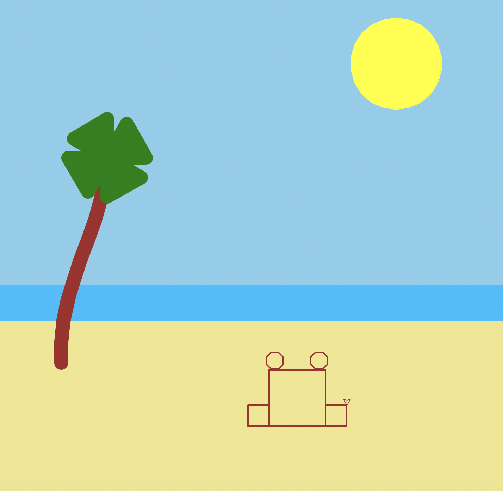

This project was created using Python Turtle Graphics. The program draws a sunny beach scene.

I used custom functions to draw shapes such as rectangles, circles, triangles, polygons, and curves to build the scene.